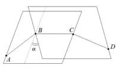

Torsion angle (En). Торсионный угол (Ru).
To’rtda A-B-C-D bog’langan atomlardan tashkil topgan zanjirda, B-C bog’ga perpendikulyar bo'lgan tekislikda, A-B va C-D bog’lari proektsiyalari o'rtasidagi eng kichik burchak. Boshqacha qilib aytganda, umumiy B-C tomoniga ega bo'lgan, ABC va BCD uchburchaklar tekisliklari orasidagi diedral (ikkiyoqli) burchak sifatida aniqlanadi (37-rasm).

37-rasm. Torsion (Buralish) burchagi.